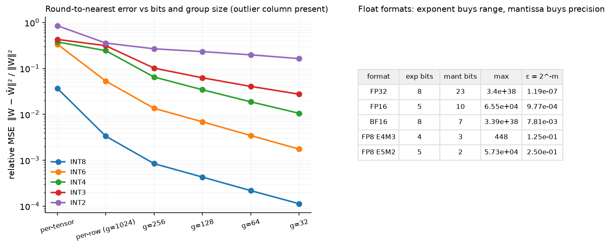

Quantization¶
Why this matters at staff level. Quantisation is how a 70B model fits on one GPU and how decode gets faster (fewer bytes per weight read), and it is the first thing a serving team touches. Interviews ask you to write the affine quantiser, explain why per-channel and per-group scales exist, why LLM activations are hard (outliers), what GPTQ and AWQ actually optimise, and what the straight-through estimator is. Strong signal is a quantised Linear from scratch and a clear statement of which bytes each method saves.
TL;DR: the interview card¶
- Formats: FP32 = 1/8/23 (sign/exp/mantissa), FP16 = 1/5/10 (max 65,504), BF16 = 1/8/7 (FP32 range, 3 significant digits), FP8 E4M3 (max 448, no inf) for weights/activations and E5M2 (max 57,344) for gradients. BF16 for training because range, not precision, kills runs.
- Affine quantisation: \(q = \text{clip}(\lfloor x/s\rceil + z,\ q_{\min}, q_{\max})\), \(\hat x = s(q - z)\). Symmetric: \(z = 0\), \(s = \max|x|/q_{\max}\). Asymmetric: \(s = (x_{\max}-x_{\min})/(2^b-1)\), \(z = \lfloor -x_{\min}/s\rceil\). Error per element \(\le s/2\).
- Granularity: per-tensor < per-channel (row of \(W\)) < per-group (e.g. 128 consecutive inputs). Smaller groups → smaller scale → smaller error, at the cost of storing scales (~0.25 bit/weight at g=128 in fp16... 16/128 = 0.125 bits).
- Weight-only INT4/INT8 (GPTQ, AWQ, bitsandbytes NF4): dequantise in the kernel, matmul in bf16; wins on memory-bound decode. W8A8 (LLM.int8, SmoothQuant): integer matmuls, wins on compute-bound prefill/batching, but must handle activation outliers.
- Outliers: past ~6.7B parameters a few hidden dimensions carry values 20–100× larger; per-tensor INT8 activations collapse. LLM.int8 routes those columns through fp16 (mixed decomposition); SmoothQuant rescales \(X W = (X/s)(sW)\) to move difficulty into weights.
- GPTQ: quantise columns in order, push each column's rounding error into unquantised columns via the inverse Hessian \(H = X^\top X\) of calibration inputs (OBQ). AWQ: keep 1% of salient channels precise by scaling them up before quantisation, chosen by activation magnitude.
- QAT: fake-quantise in forward, straight-through gradient (\(\partial\hat x/\partial x = 1\) inside the clip range) so master weights learn to survive rounding.
- KV cache quantisation to INT8/FP8 per head/token halves decode memory traffic; calibration data for PTQ is ~128 sequences of 2k tokens of pretraining-like text.
1. Intuition first¶
A number format is a budget of bits split between range (exponent) and precision (mantissa). BF16 spends 8 bits on exponent, so it represents \(10^{-38}\) to \(3\times10^{38}\) but only ~3 significant digits; FP16 spends 5, so it stops at 65,504 and needs loss scaling to keep gradients from underflowing. Training is dominated by range problems (a single overflow poisons a run), which is why BF16 won.
Integer quantisation removes the exponent entirely: every value in a tensor is expressed as an integer multiple of one shared scale \(s\). Take the 2×3 matrix
Per-tensor INT8 symmetric: \(s = 3.10/127 = 0.0244\). Row 1's entries become \(\lfloor 0.10/s\rceil = 4\), \(-17\), \(2\): three values that used a range of \([-0.42, 0.10]\) are squeezed into 21 steps, with error up to \(s/2 = 0.012\), i.e. 12% of the smallest entry. One large value in row 2 set the scale for everyone. Per-channel (one scale per row) gives row 1 \(s = 0.42/127 = 0.0033\), 8× finer. Per-group of 128 does the same along the input dimension. That is the whole granularity story: scales are cheap, outliers are expensive, keep the outlier's influence local.

Left: relative reconstruction error of round-to-nearest on a weight matrix with one outlier input channel; smaller groups isolate the outlier and lower the error at every bit width, and INT4 at \(g=32\) is close to INT8 per-tensor. Right: exponent/mantissa split of the formats you will be asked about.
2. The math¶
2.1 Floating-point formats¶
A binary float is \((-1)^{\text{sign}}\cdot 1.m \cdot 2^{e - \text{bias}}\) with bias \(2^{e_{\text{bits}}-1}-1\). Max normal \(= (2 - 2^{-m})\,2^{2^{e_{\text{bits}}}-2-\text{bias}}\); machine epsilon \(2^{-m}\).
| Format | exp | mant | max | \(\epsilon\) | Use |
|---|---|---|---|---|---|
| FP32 | 8 | 23 | \(3.4\times10^{38}\) | \(1.2\times10^{-7}\) | master weights, optimiser states, softmax/norm accumulations |
| FP16 | 5 | 10 | 65,504 | \(9.8\times10^{-4}\) | inference; training only with loss scaling |
| BF16 | 8 | 7 | \(3.4\times10^{38}\) | \(7.8\times10^{-3}\) | training default |
| FP8 E4M3 | 4 | 3 | 448 | 0.125 | weights and activations (forward) |
| FP8 E5M2 | 5 | 2 | 57,344 | 0.25 | gradients (backward) |
E4M3 gives up \(\pm\infty\) and all but one NaN encoding to extend its max to 448; FP8 always comes with a per-tensor or per-block scale factor. DeepSeek-V3 trains in FP8 with fine-grained scaling (1×128 tiles for activations, 128×128 blocks for weights) and accumulates in FP32 on the tensor cores at a fixed interval to control error growth: FP8 training is a scaling-and-accumulation design problem, not a format choice.
2.2 Affine quantisation and its error¶
Symmetric: \(z = 0\), \(s = \max|x| / q_{\max}\) with \(q_{\max} = 2^{b-1}-1\). Asymmetric: \(s = (x_{\max} - x_{\min})/(2^b - 1)\), \(z = \lfloor -x_{\min}/s\rceil\), with the range widened to include 0 so that zero (padding, ReLU outputs) is exact. For values inside the range, \(|x - \hat x| \le s/2\); if values are roughly uniform in the range, the error is uniform on \([-s/2, s/2]\) with variance \(s^2/12\). With a Gaussian weight distribution and \(s\) set by the max, the max grows like \(\sigma\sqrt{2\ln n}\) with the number \(n\) of elements sharing a scale, so smaller groups give smaller \(s\) at the same \(b\): that is the quantitative reason for per-group scales. The bookkeeping cost is one scale (fp16) per group: \(16/g\) bits per weight, 0.125 for \(g = 128\).
2.3 Where the error goes: output-space objectives¶
Rounding weights independently minimises \(\|W - \hat W\|^2\), but what matters is the layer output error \(\|XW^\top - X\hat W^\top\|^2\). Writing \(\Delta = \hat W - W\) and \(H = X^\top X\) (the input second-moment matrix from calibration data),
Inputs are correlated (\(H\) is far from diagonal), so rounding one weight can be compensated by adjusting others. OBQ/GPTQ: quantise weight \(j\) (a column of \(W\)), then update the remaining weights by
which is the minimiser of the quadratic objective given that coordinate \(j\) is fixed (a Lagrangian step on \(\delta^\top H\delta\)). GPTQ's contribution is doing this for all rows in the same column order with one Cholesky factorisation of \(H^{-1}\), in minutes for a 175B model.
AWQ observes that a small fraction of input channels (by activation magnitude) matter far more; multiplying those weight columns by \(s_j > 1\) before rounding (and dividing the activations by \(s_j\), which is exact) shrinks their relative rounding error. Scales \(s_j = \bar{|x_j|}^{\alpha}\) with \(\alpha\) chosen by grid search on reconstruction error. No gradient, no Hessian, weights only.
SmoothQuant uses the same identity for W8A8: \(XW^\top = (X S^{-1})(WS)^\top\) with \(S = \diag(s)\), \(s_j = \max|X_j|^{\alpha}/\max|W_j|^{1-\alpha}\), \(\alpha = 0.5\); the activation outliers shrink by \(s_j\), the weights grow by \(s_j\), and both become quantisable per-tensor.
LLM.int8() instead keeps the outlier columns (any input feature whose magnitude exceeds a threshold, ~6, anywhere in the batch) in fp16 and computes the rest with row-wise (per-token) and column-wise (per-output) INT8 scales: \(XW^\top = X_{o}W_{o}^\top + \text{dequant}(X_r^{q} W_r^{q\top})\). It was the first method to make 175B-scale INT8 inference lossless, at the cost of two kernels.
2.4 Quantisation-aware training and the STE¶
Post-training quantisation uses a frozen model and calibration data. QAT instead trains with the quantiser in the forward pass, \(\hat W = s\lfloor W/s\rceil\), so the model adapts. The derivative of round is zero almost everywhere; the straight-through estimator sets
identity inside the range, zero where the value was clipped. Master weights stay in float and accumulate small updates that eventually flip a rounding; this is why QAT recovers accuracy at 4 bits and below where PTQ cannot. The cost is a training run (or at least a fine-tuning run), which is why PTQ dominates for LLMs and QAT is reserved for the lowest bit widths and for edge deployments.
2.5 KV-cache quantisation (literacy)¶
Keys have per-channel outliers (some dimensions consistently large, tied to RoPE frequencies), values do not; KIVI quantises keys per channel and values per token to 2 bits with small accuracy loss. Production systems more often use FP8 or INT8 with per-head, per-token scales, halving cache traffic and doubling decode batch size for no measurable loss. The cache is quantised at write time and dequantised inside the attention kernel.
3. Implementation¶
3.1 The quantiser at three granularities¶
def quantize(x, bits, symmetric=True, dim=None):
q_min, q_max = int_range(bits, symmetric)
if symmetric:
scale = _reduce(x, "absmax", dim) / q_max # (...,1) or (1,)
zero = torch.zeros_like(scale)
else:
x_min = _reduce(x, "min", dim).clamp(max=0.0) # include 0 in the range
x_max = _reduce(x, "max", dim).clamp(min=0.0)
scale = ((x_max - x_min) / (q_max - q_min)).clamp(min=1e-12)
zero = torch.round(-x_min / scale)
q = torch.clamp(torch.round(x / scale) + zero, q_min, q_max).to(torch.int32)
dim=None is per-tensor, dim=1 on a (out, in) weight is per-output-channel. Per-group
reshapes (out, in) to (out, in // g, g) and calls the same function with dim=2, so the
scale tensor is (out, n_groups, 1). The codes are kept as int32 for readability;
QuantizedLinear packs them.
3.2 A weight-only INT4 Linear¶
def pack_int4(q):
u = (q + 8).to(torch.uint8) # (out, in) unsigned nibbles in [0, 15]
return u[:, 0::2] | (u[:, 1::2] << 4) # (out, in // 2)
def dequantized_weight(self):
q = unpack_int4(self.codes) if self.bits == 4 else self.codes.to(torch.int32) # (out, in)
grouped = q.reshape(self.out_features, -1, self.group_size).float() # (out, n_groups, group)
return (grouped * self.scale).reshape(self.out_features, self.in_features) # (out, in)
def forward(self, x):
W_hat = self.dequantized_weight() # rebuilt on the fly
return x @ W_hat.T + self.bias
Two INT4 codes share a byte (low nibble = even column). forward expands the codes and
multiplies in float; a production kernel fuses the unpack-and-scale into the matmul's
inner loop so the weight bytes read from HBM are the 4-bit ones. weight_bytes() shows the
storage: \(n/2\) bytes of codes plus \(n/g\) scales.
3.3 LLM.int8 decomposition and GPTQ¶
outlier = X.abs().amax(dim=0) > threshold # (in,) which input features are outliers
regular = (Xq @ Wq.T) * sx * sw.T # int8 x int8 with row/col scales
return regular + X[:, outlier] @ W[:, outlier].T # fp path for the outlier columns
for j in range(in_f):
if j % group_size == 0:
scale = W[:, j:j+group_size].abs().amax(1, keepdim=True) / q_max
w = W[:, j:j+1]
w_hat = torch.clamp(torch.round(w / scale), -q_max-1, q_max) * scale
err = (w - w_hat) / H_inv[j, j] # (out, 1)
W[:, j+1:] -= err @ H_inv[j:j+1, j+1:] # push the error into later columns
gptq_quantize is the OBQ update of §2.3 in its simplest form (no lazy batching, no
Cholesky, fixed column order); the test shows it beats round-to-nearest by more than 30%
in output error on correlated inputs at 3 bits. Note the group's scale is computed from the
updated weights, as GPTQ does.
3.4 Fake quantisation with STE¶
class RoundSTE(torch.autograd.Function):
@staticmethod
def forward(ctx, x): return torch.round(x)
@staticmethod
def backward(ctx, grad): return grad # identity: the straight-through estimator
z = x / scale
q = torch.clamp(RoundSTE.apply(z), -q_max - 1, q_max)
in_range = (z.detach().abs() <= q_max + 0.5).to(x.dtype)
q_ste = q.detach() + in_range * (z - z.detach()) # forward: q; backward: grad * in_range
return q_ste * scale
The q.detach() + in_range * (z - z.detach()) idiom gives the forward value of q and the
gradient of z masked to the un-clipped region, which is the boxed STE. QATLinear applies
it per output channel to the master weights each forward.
Full implementation: src/mlbook/quant/quantize.py
"""Uniform (affine) quantisation primitives (PyTorch tensors, CPU-friendly).
symmetric: s = max|x| / q_max, q = clip(round(x / s), -q_max-1, q_max)
asymmetric: s = (x_max − x_min) / (2^b − 1), z = round(−x_min / s),
q = clip(round(x / s) + z, 0, 2^b − 1)
dequantise: x̂ = s · (q − z) (z = 0 for symmetric)
Granularity: one (s, z) per tensor, per output channel (row), or per group of
``group_size`` consecutive input weights (GPTQ/AWQ-style, e.g. 128).
Also here: floating-point format arithmetic (FP16/BF16/FP8) and SmoothQuant/AWQ
style per-channel smoothing, which moves quantisation difficulty from
activations into weights without changing the product.
"""
from __future__ import annotations
from dataclasses import dataclass
import torch
@dataclass
class QuantResult:
"""Integer codes plus the affine parameters needed to dequantise."""
q: torch.Tensor # integer codes, same shape as x (stored as int32 for clarity)
scale: torch.Tensor # broadcastable to x
zero: torch.Tensor # broadcastable to x (all zeros when symmetric)
bits: int
symmetric: bool
def int_range(bits: int, symmetric: bool) -> tuple[int, int]:
"""(q_min, q_max): symmetric [-2^(b-1), 2^(b-1)-1], asymmetric [0, 2^b - 1]."""
if symmetric:
return -(2 ** (bits - 1)), 2 ** (bits - 1) - 1
return 0, 2**bits - 1
def _reduce(x: torch.Tensor, fn: str, dim: int | None) -> torch.Tensor:
"""min/max/absmax over ``dim`` (keepdim) or over the whole tensor."""
if fn == "absmax":
x = x.abs()
fn = "max"
if dim is None:
return getattr(x, fn)().reshape(1)
return getattr(x, fn)(dim=dim, keepdim=True).values
def quantize(x: torch.Tensor, bits: int, symmetric: bool = True, dim: int | None = None) -> QuantResult:
"""Affine quantisation with one scale per tensor (``dim=None``) or per slice along ``dim``.
Args:
x: any shape.
dim: reduction axis for the statistics; ``dim=1`` on a (out, in) weight gives
per-output-channel scales of shape (out, 1).
"""
q_min, q_max = int_range(bits, symmetric)
if symmetric:
scale = _reduce(x, "absmax", dim) / q_max # (…,1) or (1,)
scale = scale.clamp(min=1e-12)
zero = torch.zeros_like(scale)
else:
x_min = _reduce(x, "min", dim).clamp(max=0.0) # include 0 so zero is representable exactly
x_max = _reduce(x, "max", dim).clamp(min=0.0)
scale = ((x_max - x_min) / (q_max - q_min)).clamp(min=1e-12)
zero = torch.round(-x_min / scale) # integer offset so that x_min -> q_min
q = torch.clamp(torch.round(x / scale) + zero, q_min, q_max).to(torch.int32)
return QuantResult(q, scale, zero, bits, symmetric)
def dequantize(r: QuantResult) -> torch.Tensor:
"""x̂ = scale · (q − zero), same shape as the original."""
return r.scale * (r.q.to(r.scale.dtype) - r.zero)
def quantize_per_group(W: torch.Tensor, bits: int, group_size: int, symmetric: bool = True) -> QuantResult:
"""Per-group quantisation of a (out, in) weight: one (scale, zero) per ``group_size`` inputs.
Returns codes of shape (out, in) and scale/zero of shape (out, in // group_size, 1)
broadcast over the grouped view (out, in // group_size, group_size).
"""
out_f, in_f = W.shape
if in_f % group_size != 0:
raise ValueError("in_features must be divisible by group_size")
grouped = W.reshape(out_f, in_f // group_size, group_size) # (out, n_groups, group)
r = quantize(grouped, bits, symmetric, dim=2) # scale: (out, n_groups, 1)
return QuantResult(r.q.reshape(out_f, in_f), r.scale, r.zero, bits, symmetric)
def dequantize_per_group(r: QuantResult, group_size: int) -> torch.Tensor:
"""Inverse of ``quantize_per_group``: (out, in)."""
out_f, in_f = r.q.shape
grouped = r.q.reshape(out_f, in_f // group_size, group_size).to(r.scale.dtype) # (out, n_groups, group)
return (r.scale * (grouped - r.zero)).reshape(out_f, in_f)
def quantization_mse(W: torch.Tensor, bits: int, group_size: int | None, symmetric: bool = True) -> float:
"""Mean squared reconstruction error of round-to-nearest at a given granularity."""
if group_size is None:
W_hat = dequantize(quantize(W, bits, symmetric, dim=None))
else:
W_hat = dequantize_per_group(quantize_per_group(W, bits, group_size, symmetric), group_size)
return float(((W - W_hat) ** 2).mean())
# ---------------------------------------------------------------------------
# Floating-point formats
# ---------------------------------------------------------------------------
@dataclass(frozen=True)
class FloatFormat:
"""IEEE-style format with ``exp_bits`` exponent bits and ``mant_bits`` mantissa bits."""
name: str
exp_bits: int
mant_bits: int
fp8_e4m3_special: bool = False # E4M3 (OCP/NVIDIA) drops inf and keeps one NaN to reach 448
@property
def bias(self) -> int:
return 2 ** (self.exp_bits - 1) - 1
@property
def max_normal(self) -> float:
"""Largest finite value: (2 − 2^−m) · 2^(e_max − bias)."""
if self.fp8_e4m3_special:
return 448.0 # 1.75 · 2^8: the all-ones exponent is reused for finite values
e_max = 2**self.exp_bits - 2 # all-ones exponent is reserved for inf/NaN
return (2.0 - 2.0**-self.mant_bits) * 2.0 ** (e_max - self.bias)
@property
def min_normal(self) -> float:
return 2.0 ** (1 - self.bias)
@property
def epsilon(self) -> float:
"""Spacing between 1 and the next representable number: 2^−m (relative precision)."""
return 2.0**-self.mant_bits
FP32 = FloatFormat("FP32", exp_bits=8, mant_bits=23)
FP16 = FloatFormat("FP16", exp_bits=5, mant_bits=10)
BF16 = FloatFormat("BF16", exp_bits=8, mant_bits=7)
FP8_E4M3 = FloatFormat("FP8 E4M3", exp_bits=4, mant_bits=3, fp8_e4m3_special=True)
FP8_E5M2 = FloatFormat("FP8 E5M2", exp_bits=5, mant_bits=2)
# ---------------------------------------------------------------------------
# SmoothQuant / AWQ style per-input-channel smoothing
# ---------------------------------------------------------------------------
def smoothing_scales(act_absmax: torch.Tensor, weight_absmax: torch.Tensor, alpha: float = 0.5) -> torch.Tensor:
"""SmoothQuant scale per input channel: s_j = max|X_j|^α / max|W_j|^(1−α).
Args:
act_absmax: (in,) per-input-channel activation magnitude from calibration data.
weight_absmax: (in,) per-input-channel weight magnitude (max over output rows).
Returns:
(in,) positive scales. AWQ uses the same shape of transform with s_j = act_mean_j^α
(searching α) and chooses α by reconstruction error.
"""
return (act_absmax.clamp(min=1e-5) ** alpha) / (weight_absmax.clamp(min=1e-5) ** (1 - alpha))
def apply_smoothing(X: torch.Tensor, W: torch.Tensor, s: torch.Tensor) -> tuple[torch.Tensor, torch.Tensor]:
"""Return (X / s, W · s) so that (X/s)(W·s)^T = X W^T exactly.
Args:
X: (N, in) activations, W: (out, in) weight, s: (in,).
"""
return X / s[None, :], W * s[None, :]
Full implementation: src/mlbook/quant/qlinear.py
"""Weight-only quantised Linear layers that dequantise on the fly, INT4 nibble packing,
LLM.int8()-style mixed-precision decomposition, and a compact GPTQ.
At inference the bottleneck of decode is reading weights from HBM, so storing W in
4 bits and expanding it inside the kernel (here: in Python, for clarity) cuts memory
traffic by 4× versus FP16 while the arithmetic stays in FP16/BF16.
"""
from __future__ import annotations
import torch
import torch.nn as nn
from mlbook.quant.quantize import dequantize_per_group, quantize_per_group
def pack_int4(q: torch.Tensor) -> torch.Tensor:
"""Pack signed 4-bit codes in [-8, 7] two per byte: low nibble = even column, high = odd.
Args:
q: (out, in) int32 with even ``in``.
Returns:
(out, in // 2) uint8.
"""
u = (q + 8).to(torch.uint8) # (out, in) unsigned nibbles in [0, 15]
return u[:, 0::2] | (u[:, 1::2] << 4) # (out, in // 2)
def unpack_int4(packed: torch.Tensor) -> torch.Tensor:
"""Inverse of ``pack_int4``: (out, in // 2) uint8 -> (out, in) int32 in [-8, 7]."""
low = (packed & 0x0F).to(torch.int32) - 8 # (out, in // 2)
high = (packed >> 4).to(torch.int32) - 8 # (out, in // 2)
return torch.stack([low, high], dim=-1).reshape(packed.shape[0], -1) # (out, in)
class QuantizedLinear(nn.Module):
"""Weight-only INT8/INT4 Linear with per-group symmetric scales; y = x Ŵ^T + b.
Weights are stored as integer codes (INT4 packed two per byte) and a scale per
group; the forward pass dequantises to the activation dtype and does a normal
matmul. This is exactly what GPTQ/AWQ checkpoints look like on disk.
"""
def __init__(self, in_features: int, out_features: int, bits: int, group_size: int, bias: bool = True) -> None:
super().__init__()
if bits not in (4, 8):
raise ValueError("bits must be 4 or 8")
self.in_features, self.out_features = in_features, out_features
self.bits, self.group_size = bits, group_size
n_groups = in_features // group_size
cols = in_features // 2 if bits == 4 else in_features
code_dtype = torch.uint8 if bits == 4 else torch.int8
self.register_buffer("codes", torch.zeros(out_features, cols, dtype=code_dtype)) # (out, in or in/2)
self.register_buffer("scale", torch.ones(out_features, n_groups, 1)) # (out, n_groups, 1)
self.bias = nn.Parameter(torch.zeros(out_features)) if bias else None # (out,)
@classmethod
def from_linear(cls, lin: nn.Linear, bits: int, group_size: int) -> "QuantizedLinear":
"""Round-to-nearest quantise an existing nn.Linear."""
qlin = cls(lin.in_features, lin.out_features, bits, group_size, bias=lin.bias is not None)
r = quantize_per_group(lin.weight.detach(), bits, group_size, symmetric=True)
qlin.codes.copy_(pack_int4(r.q) if bits == 4 else r.q.to(torch.int8))
qlin.scale.copy_(r.scale)
if lin.bias is not None:
qlin.bias.data.copy_(lin.bias.detach())
return qlin
def dequantized_weight(self) -> torch.Tensor:
"""Ŵ of shape (out, in) in float32."""
q = unpack_int4(self.codes) if self.bits == 4 else self.codes.to(torch.int32) # (out, in)
grouped = q.reshape(self.out_features, -1, self.group_size).float() # (out, n_groups, group)
return (grouped * self.scale).reshape(self.out_features, self.in_features) # (out, in)
def forward(self, x: torch.Tensor) -> torch.Tensor:
"""(…, in) -> (…, out)."""
W_hat = self.dequantized_weight() # (out, in) rebuilt on the fly
y = x @ W_hat.T # (…, out)
return y if self.bias is None else y + self.bias
def weight_bytes(self) -> int:
"""Bytes of codes + scales (fp32 scales here; production stores fp16 scales)."""
return self.codes.numel() * self.codes.element_size() + self.scale.numel() * 4
def int8_matmul_with_outliers(X: torch.Tensor, W: torch.Tensor, threshold: float = 6.0) -> torch.Tensor:
"""LLM.int8() mixed decomposition of X W^T.
Input columns whose absolute activation exceeds ``threshold`` anywhere in the
batch are computed in fp16/fp32; every other column goes through row-wise
(per token) INT8 activations × column-wise (per output) INT8 weights.
Args:
X: (N, in) activations, W: (out, in) weights.
Returns:
(N, out).
"""
outlier = X.abs().amax(dim=0) > threshold # (in,) which input features are outliers
X_o, W_o = X[:, outlier], W[:, outlier] # (N, n_o), (out, n_o)
X_r, W_r = X[:, ~outlier], W[:, ~outlier] # (N, in-n_o), (out, in-n_o)
sx = X_r.abs().amax(dim=1, keepdim=True).clamp(min=1e-12) / 127 # (N, 1) per-row scale
sw = W_r.abs().amax(dim=1, keepdim=True).clamp(min=1e-12) / 127 # (out, 1) per-column scale
Xq = torch.round(X_r / sx) # (N, in-n_o) integers in [-127, 127]
Wq = torch.round(W_r / sw) # (out, in-n_o)
regular = (Xq @ Wq.T) * sx * sw.T # (N, out) int accumulate, then rescale
return regular + X_o @ W_o.T # (N, out)
def gptq_quantize(W: torch.Tensor, H: torch.Tensor, bits: int, group_size: int, damp: float = 0.01) -> torch.Tensor:
"""Compact GPTQ (OBQ with a fixed column order): quantise W column by column,
feeding each column's rounding error into the not-yet-quantised columns
through the inverse Hessian ``H^{-1}`` of the layer's input second moments.
For column j: q_j = round(w_j / s), err_j = (w_j − ŵ_j) / [H^{-1}]_{jj},
W[:, j+1:] −= err_j ⊗ [H^{-1}]_{j, j+1:}.
Args:
W: (out, in) weight; H: (in, in) = X^T X / N from calibration activations.
Returns:
(out, in) dequantised weight (codes ⋅ scales) with symmetric per-group scales.
"""
W = W.clone().float()
H = H.clone().float()
H += damp * H.diagonal().mean() * torch.eye(H.shape[0]) # dampening for invertibility
H_inv = torch.linalg.inv(H) # (in, in)
q_max = 2 ** (bits - 1) - 1
out_f, in_f = W.shape
W_hat = torch.zeros_like(W) # (out, in)
scale = torch.zeros(out_f, 1) # (out, 1) current group's scale
for j in range(in_f):
if j % group_size == 0: # scales come from the *updated* weights of this group
scale = W[:, j : j + group_size].abs().amax(dim=1, keepdim=True).clamp(min=1e-12) / q_max
w = W[:, j : j + 1] # (out, 1)
w_hat = torch.clamp(torch.round(w / scale), -q_max - 1, q_max) * scale # (out, 1)
W_hat[:, j : j + 1] = w_hat
err = (w - w_hat) / H_inv[j, j] # (out, 1)
W[:, j + 1 :] -= err @ H_inv[j : j + 1, j + 1 :] # (out, in-j-1) push error forward
return W_hat
Full implementation: src/mlbook/quant/fake_quant.py
"""Quantisation-aware training: fake quantisation with the straight-through estimator.
Forward: x̂ = s · clip(round(x / s), q_min, q_max) (quantise, then dequantise)
Backward: ∂L/∂x := ∂L/∂x̂ · 1[q_min ≤ x/s ≤ q_max] (round has zero gradient
almost everywhere, so we pretend it is the identity inside the clip range)
"""
from __future__ import annotations
import torch
import torch.nn as nn
class RoundSTE(torch.autograd.Function):
"""round(x) in the forward pass, identity gradient in the backward pass."""
@staticmethod
def forward(ctx, x: torch.Tensor) -> torch.Tensor: # type: ignore[override]
return torch.round(x)
@staticmethod
def backward(ctx, grad: torch.Tensor) -> torch.Tensor: # type: ignore[override]
return grad
def fake_quantize(x: torch.Tensor, bits: int, dim: int | None = None) -> torch.Tensor:
"""Symmetric fake quantisation with STE; the scale is computed from ``x`` (no grad to scale).
Args:
x: any shape; ``dim`` selects per-slice scales (e.g. dim=1 on (out, in) = per row).
Returns:
x̂ with the same shape, differentiable via the straight-through estimator.
"""
q_max = 2 ** (bits - 1) - 1
if dim is None:
scale = x.detach().abs().max().clamp(min=1e-12) / q_max
else:
scale = x.detach().abs().amax(dim=dim, keepdim=True).clamp(min=1e-12) / q_max
z = x / scale # real-valued codes
q = torch.clamp(RoundSTE.apply(z), -q_max - 1, q_max) # integer codes (forward value)
# STE gradient mask: pass the gradient only where rounding (not clipping) chose the code.
in_range = (z.detach().abs() <= q_max + 0.5).to(x.dtype)
q_ste = q.detach() + in_range * (z - z.detach()) # forward: q; backward: grad * in_range
return q_ste * scale
class QATLinear(nn.Module):
"""nn.Linear whose weights (and optionally activations) pass through fake quantisation.
The master weights stay in float; the optimiser updates them with STE gradients,
so the model learns weights that survive rounding. Export with ``quantize_per_group``.
"""
def __init__(self, in_features: int, out_features: int, w_bits: int = 8, a_bits: int | None = None) -> None:
super().__init__()
self.linear = nn.Linear(in_features, out_features)
self.w_bits, self.a_bits = w_bits, a_bits
def forward(self, x: torch.Tensor) -> torch.Tensor:
"""(…, in) -> (…, out) using fake-quantised weights (per output channel)."""
if self.a_bits is not None:
x = fake_quantize(x, self.a_bits) # per-tensor activation fake quant
W_hat = fake_quantize(self.linear.weight, self.w_bits, dim=1) # (out, in)
return x @ W_hat.T + self.linear.bias # (…, out)
How you'd test it. Round-trip error bound \(|x - \hat x| \le s/2\); asymmetric beats symmetric on all-positive data and represents 0 exactly; per-channel beats per-tensor on rows of different scale; error is monotone decreasing in group size; INT4 pack/unpack is lossless; the quantised Linear tracks the float one within 1% (INT8) and 10% (INT4); mixed-precision INT8 beats plain INT8 with an outlier column; GPTQ beats RTN; the STE passes gradient inside the range and QAT reduces a regression loss.
Retype by hand¶
| Symbol | File | Target time |
|---|---|---|
quantize / dequantize (symmetric and asymmetric, dim) |
src/mlbook/quant/quantize.py |
10 minutes |
quantize_per_group |
src/mlbook/quant/quantize.py |
5 minutes |
QuantizedLinear.from_linear / forward, pack_int4 |
src/mlbook/quant/qlinear.py |
15 minutes |
int8_matmul_with_outliers |
src/mlbook/quant/qlinear.py |
8 minutes |
RoundSTE, fake_quantize |
src/mlbook/quant/fake_quant.py |
8 minutes |
Fine to just read: FloatFormat and the format constants, smoothing_scales,
apply_smoothing, gptq_quantize, QATLinear.
Check with python -m pytest tests/test_quant_quantize.py tests/test_quant_qlinear.py tests/test_quant_fake_quant.py -q
(test_symmetric_per_tensor_roundtrip_error_bound, test_asymmetric_uses_full_range_and_represents_zero_exactly,
test_per_group_shapes_and_error_vs_group_size, test_quantized_linear_matches_float_linear,
test_int4_pack_unpack_roundtrip, test_int8_with_outliers_is_close_and_better_than_plain_int8,
test_round_ste_forward_rounds_backward_identity, test_fake_quantize_matches_quantize_dequantize_and_passes_gradient).
4. Systems view: cost, failure modes, trade-offs¶
Which bytes each method saves.
| Method | Weights | Activations | KV cache | Speed-up regime | Accuracy risk |
|---|---|---|---|---|---|
| BF16 (baseline) | 2 B | 2 B | 2 B | baseline | none |
| Weight-only INT8 (per-channel RTN) | 1 B | 2 B | 2 B | decode, batch ≤ ~16 | negligible |
| Weight-only INT4 (GPTQ/AWQ, g=128) | 0.5 B + scales | 2 B | 2 B | decode, memory-bound | small; worse on small models and on math/code |
| NF4 (bitsandbytes / QLoRA) | ~0.5 B | 2 B | 2 B | fine-tuning memory | small |
| W8A8 (LLM.int8, SmoothQuant) | 1 B | 1 B | 2 B | prefill and large-batch decode (INT8 tensor cores) | outliers; SmoothQuant needs calibration |
| FP8 W8A8 (Hopper) | 1 B | 1 B | 1 B | both, with FA-3 | low with per-block scales |
| KV INT8/FP8 | 2 B | 2 B | 1 B | long context, large batch | low |
Weight-only quantisation adds work (dequantise in the kernel) and only helps when the kernel was waiting for bytes; at large batch the matmul becomes compute-bound and INT4 weights can be slower than bf16 unless the arithmetic is also integer. This is the single most common misunderstanding: quantisation is a memory-traffic optimisation first.
Failure modes.
| Failure | Symptom | Fix |
|---|---|---|
| Per-tensor activation INT8 on a >6B model | perplexity explodes | mixed decomposition, SmoothQuant, or per-token scales |
| Calibration set unlike deployment data | good perplexity, bad task accuracy | calibrate on task-like text; check downstream, not only perplexity |
| INT4 on small (≤3B) or heavily overtrained models | large accuracy drop | INT8 or QAT; overtrained models have less redundancy to spare |
Quantising lm_head / embeddings |
disproportionate loss | keep them in bf16 (standard practice) |
| FP16 overflow in dequantised activations | NaNs on Ampere | bf16 activations, fp32 accumulation |
| Group size too small | scale overhead and slower kernels | g=64–128 is the production sweet spot |
When to use what.
| Situation | Decision rule |
|---|---|
| Single-GPU serving of a 70B model | INT4 weight-only (AWQ/GPTQ, g=128), bf16 activations, FP8 KV cache |
| Throughput serving at large batch on H100 | FP8 W8A8 with per-block scales; INT8 SmoothQuant on Ampere |
| Fine-tuning on one GPU | QLoRA: NF4 weights + bf16 LoRA (chapter 6) |
| Edge / CPU | INT4 with QAT or GPTQ, group 32–64; watch accuracy on the target tasks |
| Training | BF16 with FP32 master weights; FP8 only with the DeepSeek-style scaling recipe and validation of loss curves against bf16 |
5. In production¶
DeepSeek: FP8 training of DeepSeek-V3
The first frontier-scale model trained with FP8 for most matmuls. Tile-wise (1×128) activation scales and block-wise (128×128) weight scales handle outliers, and accumulation is promoted to FP32 CUDA cores every 128 elements because Hopper tensor cores accumulate FP8 in limited precision. They report the relative loss error versus bf16 stays below 0.25% throughout training. Rejected alternative: per-tensor FP8 scaling (used in earlier recipes), which their ablations show cannot handle activation outliers at this scale. Source: DeepSeek-V3 Technical Report.
Hugging Face / bitsandbytes: LLM.int8() and NF4
Dettmers et al. (2022) showed emergent outlier features in models above ~6.7B parameters
and made INT8 inference of 175B models lossless with the mixed decomposition; the
implementation in bitsandbytes became the default load_in_8bit. QLoRA (2023) added
4-bit NormalFloat (quantiles of a Gaussian), double quantisation of the scales, and
paged optimisers so a 65B model could be fine-tuned on one 48 GB GPU (chapter 6).
Sources: LLM.int8(): 8-bit Matrix Multiplication for Transformers at Scale (NeurIPS
2022, arXiv:2208.07339); QLoRA: Efficient Finetuning of Quantized LLMs (NeurIPS 2023,
arXiv:2305.14314).
IST Austria / MIT: GPTQ and AWQ as the serving standard
GPTQ (2022) quantised OPT-175B and BLOOM to 3–4 bits in a few GPU-hours with negligible perplexity loss using the Hessian-based update; AWQ (2023) matched or beat it with a simpler activation-aware scaling that generalises better across tasks and ships with fast INT4 kernels. Both formats are what vLLM, TensorRT-LLM and llama.cpp-style runtimes load for 4-bit serving; the decision between them is usually made by kernel availability on the target hardware rather than accuracy. Sources: GPTQ: Accurate Post-Training Quantization for Generative Pre-trained Transformers (ICLR 2023, arXiv:2210.17323); AWQ: Activation-aware Weight Quantization for LLM Compression and Acceleration (MLSys 2024, arXiv:2306.00978); SmoothQuant (ICML 2023, arXiv:2211.10438).
Meta: Llama 3 FP8 and quantised releases
The Llama 3 paper describes FP8 inference for the 405B model with per-row/per-channel scales and specific handling of the first and last layers and the outlier-heavy attention projections, validated against bf16 on reward-model scores rather than perplexity alone. The lesson: validate quantisation on the metric the product uses. Source: The Llama 3 Herd of Models.
6. Interview questions and strong answers¶
Why BF16 for training and not FP16?
BF16 keeps FP32's exponent range, so activations and gradients across a 100-layer network neither overflow nor underflow without loss scaling; the 3-digit precision is enough because updates are accumulated into FP32 master weights. FP16 has 3 more mantissa bits but a max of 65,504, and large-model attention logits and gradient norms exceed that. Staff follow-up: Then why FP8? Halves memory traffic and doubles tensor-core throughput on Hopper; needs fine-grained scaling and periodic FP32 accumulation, as DeepSeek-V3 does.
Write the quantiser and explain per-channel vs per-group.
\(q = \text{clip}(\lfloor x/s\rceil + z)\), \(\hat x = s(q - z)\), with \(s\) from the max (symmetric) or the min/max (asymmetric). The error is bounded by \(s/2\), and \(s\) is set by the largest magnitude among the elements sharing it, so sharing across fewer elements (a row, then a group of 128 inputs) makes \(s\) smaller and the error smaller; the price is storing more scales, 0.125 bits/weight at \(g=128\). Staff follow-up: Why groups along the input dimension? Because the matmul reduces over inputs; a group's scale can be applied once per partial sum inside the kernel.
Why do LLM activations break INT8 and what are the three fixes?
Beyond ~6.7B parameters a handful of hidden dimensions carry outliers 20–100× the typical magnitude; per-tensor scaling then rounds everything else to zero. Fixes: LLM.int8 computes those columns in fp16 (mixed decomposition); SmoothQuant migrates the scale into the weights offline via \(XW = (X/s)(sW)\); per-token/per-channel dynamic scales localise the damage. Staff follow-up: Which for prefill vs decode? Prefill is compute-bound, so integer matmuls (SmoothQuant W8A8) pay; decode is memory-bound, so weight-only INT4 pays and activations can stay bf16.
What does GPTQ optimise that round-to-nearest does not?
The layer output error \(\tr(\Delta H\Delta^\top)\) with \(H = X^\top X\) from calibration data, not the weight error. Because inputs are correlated, after rounding weight \(j\) it adjusts the remaining weights by \(-(w_j - \hat w_j)[H^{-1}]_{j,\cdot}/[H^{-1}]_{jj}\) to cancel the effect on outputs. AWQ instead avoids the Hessian and protects the ~1% salient channels by scaling. Staff follow-up: Failure mode of GPTQ? Overfitting to the calibration distribution and error accumulation in late columns; dampening and act-order (quantise high-Hessian columns first) mitigate.
Explain the straight-through estimator and when QAT beats PTQ.
Round has zero derivative, so backprop through a quantiser would stop; STE substitutes the identity inside the clip range so master weights receive the gradient of the quantised forward and drift until roundings flip. QAT pays a training run and wins when PTQ's error is too large: ≤4 bits, small models, activations at low precision, or accuracy-critical tasks. Staff follow-up: Why mask the gradient outside the range? Clipped values cannot change the output by moving further out; passing gradient there causes weights to run away.
You quantised a 70B model to INT4 and it got slower at batch 64. Why?
At batch 64 the matmuls are compute-bound; INT4 weight-only kernels dequantise to bf16 and add work while saving bytes the kernel no longer waits for. Use W8A8 (INT8 or FP8 tensor cores) for large batch, or keep INT4 only for the memory-bound decode phase.
7. Exercises¶
-
★ Compute the storage per weight for INT4 with fp16 scales at \(g = 32, 64, 128\) and INT8 per-channel for a \(4096\times4096\) matrix.
Solution
INT4: \(4 + 16/g\) bits: 4.5, 4.25, 4.125 bits/weight. INT8 per-channel: \(8 + 16/4096 \approx 8.004\).
-
★★ Derive the variance \(s^2/12\) of round-to-nearest error and use it to predict the ratio of MSE between per-tensor and per-row quantisation when rows have scales \(\sigma_r\) spanning \(10^{-2}\) to \(10\).
Solution
Uniform error on \([-s/2, s/2]\) has variance \(s^2/12\). Per-tensor: \(s \propto \max_r\sigma_r\) so MSE \(\propto \sigma_{\max}^2\). Per-row: MSE \(\propto \frac1R\sum_r\sigma_r^2\). With log-spaced \(\sigma\) the mean of \(\sigma^2\) is dominated by the largest few rows, so the gain is roughly (number of rows)/(number of rows within a factor of ~2 of the max), which is why the test only asserts a 2× gap while the outlier-free case would give much more.
-
★★ (coding) Implement
quantize_kvthat quantises a(B, H_kv, T, d_head)key tensor per channel and a value tensor per token to INT8, and measure attention output error against bf16 on random data with an injected key-channel outlier.Solution
Keys:
quantize(k, 8, dim=2)gives one scale per(B, H_kv, d_head)channel across time; values:quantize(v, 8, dim=3)gives one scale per(B, H_kv, T)token. Runstandard_attentionwith dequantised tensors and compare; the per-channel key scaling keeps the outlier dimension from setting the scale for the others, and the output error should be below \(10^{-2}\) relative. -
★★★ Explain why SmoothQuant's \(\alpha\) trades activation difficulty against weight difficulty, derive the effect of \(\alpha \to 1\) and \(\alpha \to 0\), and propose how you would pick it without a grid search.
Solution
\(s_j = \max|X_j|^{\alpha}/\max|W_j|^{1-\alpha}\). At \(\alpha=1\), \(X/s\) has every channel's max equal to 1 (activations trivial) while \(W s\) inherits the full activation outlier (weights hard). At \(\alpha=0\) nothing moves to the weights and activations keep their outliers. \(\alpha=0.5\) equalises the per-channel maxima of the two. Without grid search: choose \(\alpha\) so the ratio of quantisation MSE of \(X/s\) and \(Ws\) is balanced, e.g. solve for equal per-channel dynamic ranges after scaling, which has a closed form when both are set by maxima; validate on a held-out calibration batch.
References¶
- DeepSeek-AI. DeepSeek-V3 Technical Report. 2024. arXiv:2412.19437
- Meta AI. The Llama 3 Herd of Models. 2024. arXiv:2407.21783
- Dettmers et al. LLM.int8(): 8-bit Matrix Multiplication for Transformers at Scale. NeurIPS 2022. arXiv:2208.07339
- Frantar et al. GPTQ: Accurate Post-Training Quantization for Generative Pre-trained Transformers. ICLR 2023. arXiv:2210.17323
- Lin et al. AWQ: Activation-aware Weight Quantization for LLM Compression and Acceleration. MLSys 2024. arXiv:2306.00978
- Xiao et al. SmoothQuant: Accurate and Efficient Post-Training Quantization for Large Language Models. ICML 2023. arXiv:2211.10438
- Dettmers et al. QLoRA: Efficient Finetuning of Quantized LLMs. NeurIPS 2023. arXiv:2305.14314
- Micikevicius et al. FP8 Formats for Deep Learning. 2022. arXiv:2209.05433
- Frantar, Alistarh. Optimal Brain Compression: A Framework for Accurate Post-Training Quantization and Pruning. NeurIPS 2022. arXiv:2208.11580 (OBQ)
- Liu et al. KIVI: A Tuning-Free Asymmetric 2bit Quantization for KV Cache. ICML 2024. arXiv:2402.02750
- Bengio, Léonard, Courville. Estimating or Propagating Gradients Through Stochastic Neurons for Conditional Computation. 2013. arXiv:1308.3432 (STE)